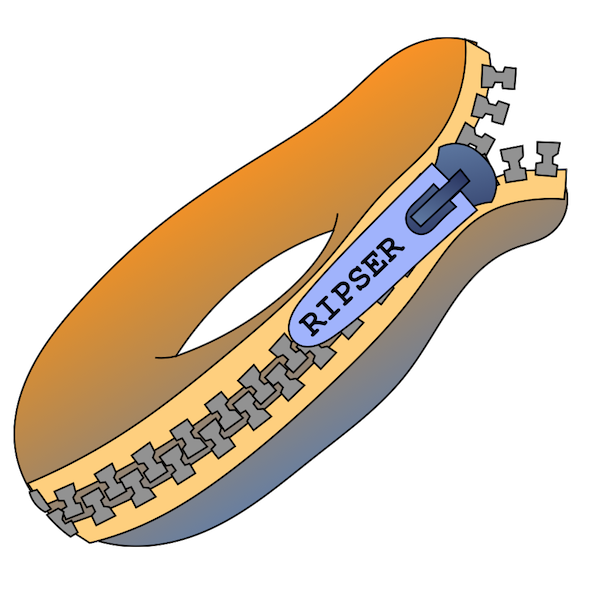
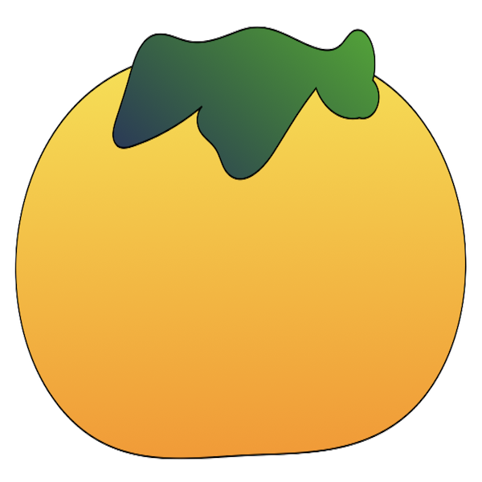
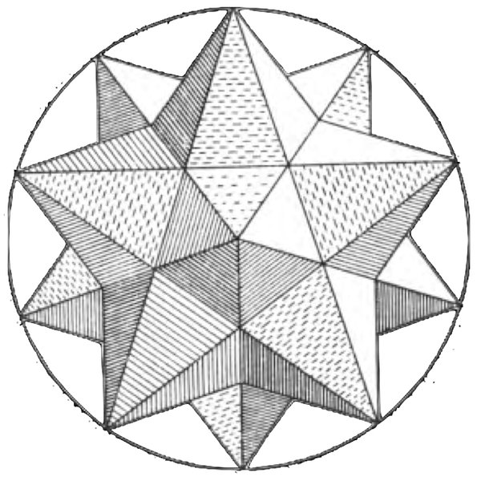

Libraries¶
Scikit-TDA provides a complete suite of TDA tools designed for academic or industry uses.
The libraries are structured similarly to the Tidyverse in that each package can stand alone, can be installed individually, but adheres to the design principles of the library. The most benefit comes from using all of them together. You’ll notice in many of the examples and notebooks that often multiple libraries are used together.

Ripser.py¶
Ripser.py is a lean persistent homology package for Python. Building on the blazing fast C++ Ripser package as the core computational engine, Ripser.py provides an intuitive interface for
- computing persistence cohomology of sparse and dense data sets,
- visualizing persistence diagrams,
- computing lowerstar filtrations on images, and
- computing representative cochains.
Installation is as easy as
>>> pip install Cython ripser
Check out complete documentation for Ripser.py at ripser.scikit-tda.org.

Persim¶
Once diagrams are constructed, the Persim package comes into play. This package houses many methods for comparison and analysis of persistence diagrams. It currently houses implementations of
- Persistence Images
- Diagram distances (Bottleneck distance, Sliced Wasserstein Kernel, Heat Kernel)
- Diagram visualization
Installation is as easy as
>>> pip install persim
Check out complete documentation for Persim at persim.scikit-tda.org.

Kepler Mapper¶
Kepler Mapper is a library implementing the Mapper algorithm in Python. Mapper can be used for visualization of the topological structures in a high-dimensional data point cloud data. Kepler Mapper leverages Scikit-Learn API compatible cluster and scaling algorithms to streamline the construction of the algorithm. The library also provides multiple visualization tools built on D3.js or Plotly.
Installation is as easy as
>>> pip install kmapper
Check out complete documentation for Kepler Mapper at kepler-mapper.scikit-tda.org.

CechMate¶
This library provides easy to use constructors for custom filtrations that are suitable for use with Phat. Phat currently provides a clean interface for persistence reduction algorithms for boundary matrices. This tool helps bridge the gap between data and boundary matrices. Currently, we support construction of
- Alpha filtrations,
- Rips filtrations, and
- Cech filtrations, and
- provide an easy interface for Phat.
Installation is as easy as
>>> pip install cechmate
Check out complete documentation for CechMate at cechmate.scikit-tda.org.

TaDAsets¶
This package provides some nice utilities for creating and loading data sets that are useful for Topological Data Analysis. Currently, we provide various synthetic data sets with particular topological features and various levels of noise and dimension. Currently includes
- n-spheres,
- torus,
- swiss rolls, and
- figure 8s.
Installation is as easy as
>>> pip install tadasets
Check out complete documentation for TaDAsets at tadasets.scikit-tda.org.